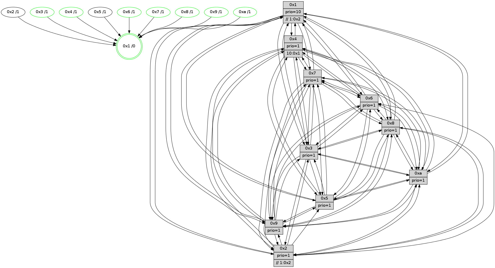

>> << IDX [start] -100 -25 -5 +0 +5 +25 +100 [970.617819071]
 Previous packets
----------------------------------------------------------------------
965.100903 beacon01(faad) #0 coord=01,02,03,04,05,06,07,0a,09,08 cycle=688.0ms assoc
-- color-indic=1 64 43 a7
965.110885 beacon02(faad) #0 coord=01,02,03,04,05,06,07,0a,09,08 cycle=688.0ms assoc 64 d0 96
965.120885 beacon03(faad) #0 coord=01,02,03,04,05,06,07,0a,09,08 cycle=688.0ms assoc 64 aa db
965.130886 beacon04(faad) #0 coord=01,02,03,04,05,06,07,0a,09,08 cycle=688.0ms assoc 64 dd 31
965.140886 beacon05(faad) #0 coord=01,02,03,04,05,06,07,0a,09,08 cycle=688.0ms assoc 64 a7 7c
965.150885 beacon06(faad) #0 coord=01,02,03,04,05,06,07,0a,09,08 cycle=688.0ms assoc 64 29 ab
965.160886 beacon07(faad) #0 coord=01,02,03,04,05,06,07,0a,09,08 cycle=688.0ms assoc 64 53 e6
965.170891 beacon0a(faad) #0 coord=01,02,03,04,05,06,07,0a,09,08 cycle=688.0ms assoc 64 22 ed
965.190891 beacon08(faad) #0 coord=01,02,03,04,05,06,07,0a,09,08 cycle=688.0ms assoc 64 d6 77
965.201834 [Hello(1): seq=526 sym=4,2,9,5,10,3,8,6,7 sysInfo=coloring-mode-on,ColoringModeRequestCalled stat=4:3,8,0,1/2:5,3,15,12/9:2,6,14,5/5:13,3,6,5/10:4,8,12,2/3:3,2,14,3/8:2,3,7,1/6:2,5,11,10/7:0,6,14,12]
965.204875 [Color(8) seq=250 @0:0 prio=1]
965.206480 [Hello(2): seq=613 sym=4,5,7,6,3,9,8,10,1 sysInfo=hasWarning stat=4:4,1,5,5/5:12,5,4,1/7:4,7,2,9/6:1,13,10,8/3:0,0,8,5/9:0,7,11,4/8:5,1,7,8/10:7,3,12,9/1:4,15,0,1]
965.209131 [Color(7) seq=200 @0:0 prio=1]
965.212862 [Hello(6): seq=617 sym=2,3,5,4,7,9,8,10,1 sysInfo= stat=2:1,3,2,1/3:9,12,1,10/5:6,9,13,12/4:10,8,7,1/7:11,5,14,6/9:15,8,14,4/8:8,5,12,2/10:10,15,5,10/1:9,7,14,1]
965.215678 [Color(6) seq=249 @0:0 prio=1]
965.219388 [Hello(5): seq=617 sym=7,6,4,3,1,9,8,10 sysInfo=hasWarning stat=7:13,6,4,9/6:5,8,4,0/4:11,2,1,7/3:1,7,9,10/1:6,3,2,1/9:8,12,14,4/8:8,15,12,9/10:7,0,8,4]
965.222909 [Hello(3): seq=617 sym=1,7,6,2,4,8,9,10,5 sysInfo= stat=1:5,11,9,0/7:2,8,7,7/6:10,0,11,2/2:9,2,13,10/4:12,1,14,6/8:6,14,7,1/9:7,0,9,10/10:1,4,9,2/5:0,11,4,11]
965.226064 [Color(3) seq=246 @0:0 prio=1]
----------------------------------------------------------------------
965.889034 beacon01(faad) #0 coord=01,02,03,04,05,06,07,0a,09,08 cycle=688.0ms assoc
-- color-indic=1 64 ff a2
965.899017 beacon02(faad) #0 coord=01,02,03,04,05,06,07,0a,09,08 cycle=688.0ms assoc 64 6c 93
965.909017 beacon03(faad) #0 coord=01,02,03,04,05,06,07,0a,09,08 cycle=688.0ms assoc 64 16 de
965.919017 beacon04(faad) #0 coord=01,02,03,04,05,06,07,0a,09,08 cycle=688.0ms assoc 64 61 34
965.929019 beacon05(faad) #0 coord=01,02,03,04,05,06,07,0a,09,08 cycle=688.0ms assoc 64 1b 79
965.939017 beacon06(faad) #0 coord=01,02,03,04,05,06,07,0a,09,08 cycle=688.0ms assoc 64 95 ae
965.949019 beacon07(faad) #0 coord=01,02,03,04,05,06,07,0a,09,08 cycle=688.0ms assoc 64 ef e3
965.959022 beacon0a(faad) #0 coord=01,02,03,04,05,06,07,0a,09,08 cycle=688.0ms assoc 64 9e e8
965.969022 beacon09(faad) #0 coord=01,02,03,04,05,06,07,0a,09,08 cycle=688.0ms assoc 64 10 3f
965.979022 beacon08(faad) #0 coord=01,02,03,04,05,06,07,0a,09,08 cycle=688.0ms assoc 64 6a 72
965.990237 [Hello(7): seq=617 sym=2,3,5,6,4,8,9,10,1 sysInfo=hasWarning stat=2:9,0,9,12/3:9,14,1,12/5:12,15,4,15/6:8,14,1,6/4:5,0,15,1/8:12,6,2,0/9:7,2,1,0/10:9,9,7,1/1:12,3,15,0]
965.993899 [Hello(8): seq=561 sym=5,2,3,4,9,6,7,10,1 sysInfo=hasWarning stat=5:14,4,1,12/2:13,0,14,5/3:1,2,14,12/4:12,12,12,7/9:7,3,1,0/6:2,8,11,10/7:9,8,3,1/10:7,5,5,0/1:4,11,13,0]
965.998357 [Color(1) seq=298 @0:0 prio=10 >>1.@2,1.@3,1.@5]
966.001022 [Hello(10): seq=550 sym=6,2,3,8,7,5,9,4,1 sysInfo=hasWarning stat=6:0,10,0,4/2:5,15,13,4/3:13,5,8,8/8:2,12,4,1/7:9,9,2,1/5:0,0,1,12/9:7,4,1,0/4:3,15,6,7/1:13,7,3,1]
966.004862 [Hello(9): seq=561 sym=2,5,3,4,7,6,8,10,1 sysInfo=hasWarning stat=2:14,7,14,3/5:0,6,10,3/3:13,13,12,12/4:11,0,10,7/7:14,1,14,9/6:13,8,4,8/8:10,7,14,2/10:4,0,1,0/1:7,10,1,1]
966.008500 [Hello(4): seq=617 sym=5,7,6,2,3,9,8,10,1 sysInfo= stat=5:8,5,12,11/7:14,12,15,7/6:3,12,10,9/2:9,5,8,9/3:0,12,10,8/9:12,4,1,7/8:7,4,3,2/10:14,10,4,9/1:3,14,1,1]
----------------------------------------------------------------------
966.677166 beacon01(faad) #0 coord=01,02,03,04,05,06,07,0a,09,08 cycle=688.0ms assoc
-- color-indic=1 64 cb ba
966.687148 beacon02(faad) #0 coord=01,02,03,04,05,06,07,0a,09,08 cycle=688.0ms assoc 64 58 8b
966.697149 beacon03(faad) #0 coord=01,02,03,04,05,06,07,0a,09,08 cycle=688.0ms assoc 64 22 c6
966.707148 beacon04(faad) #0 coord=01,02,03,04,05,06,07,0a,09,08 cycle=688.0ms assoc 64 55 2c
966.717149 beacon05(faad) #0 coord=01,02,03,04,05,06,07,0a,09,08 cycle=688.0ms assoc 64 2f 61
966.727149 beacon06(faad) #0 coord=01,02,03,04,05,06,07,0a,09,08 cycle=688.0ms assoc 64 a1 b6
966.737149 beacon07(faad) #0 coord=01,02,03,04,05,06,07,0a,09,08 cycle=688.0ms assoc 64 db fb
966.747155 beacon0a(faad) #0 coord=01,02,03,04,05,06,07,0a,09,08 cycle=688.0ms assoc 64 aa f0
966.757153 beacon09(faad) #0 coord=01,02,03,04,05,06,07,0a,09,08 cycle=688.0ms assoc 64 24 27
966.767154 beacon08(faad) #0 coord=01,02,03,04,05,06,07,0a,09,08 cycle=688.0ms assoc 64 5e 6a
966.778308 [Hello(5): seq=618 sym=7,6,4,3,1,9,8,10 sysInfo=hasWarning stat=7:14,6,4,9/6:5,8,4,0/4:12,2,1,7/3:2,8,9,10/1:6,4,2,1/9:9,12,14,4/8:9,15,12,9/10:8,0,8,4]
966.781110 [Color(7) seq=201 @0:0 prio=1]
966.782655 [Hello(1): seq=527 sym=4,2,9,5,10,3,8,6,7 sysInfo=coloring-mode-on,ColoringModeRequestCalled stat=4:4,8,0,1/2:6,3,15,12/9:3,6,14,5/5:14,3,6,5/10:5,8,12,2/3:4,3,14,3/8:2,4,7,1/6:3,6,11,10/7:1,7,14,12]
966.785458 [STC(1) #0.130 tree-change,inconsistent-stability,stable,to-color d=0]
966.786862 [Hello(3): seq=618 sym=1,7,6,2,4,8,9,10,5 sysInfo= stat=1:6,12,9,0/7:3,8,7,7/6:10,0,11,2/2:9,2,13,10/4:13,1,14,6/8:7,15,7,1/9:8,0,9,10/10:2,4,9,2/5:0,11,4,11]
966.789621 [Hello(6): seq=618 sym=3,5,4,7,9,8,10,1 sysInfo= stat=3:10,13,1,10/5:7,9,13,12/4:11,8,7,1/7:12,5,14,6/9:0,8,14,4/8:9,6,12,2/10:11,15,5,10/1:10,8,14,1]
966.794234 [Color(6) seq=250 @0:0 prio=1]
966.796132 [Hello(2): seq=614 sym=4,5,7,6,3,9,8,10,1 sysInfo=hasWarning stat=4:5,1,5,5/5:13,5,4,1/7:5,8,2,9/6:2,14,10,8/3:1,1,8,5/9:1,7,11,4/8:6,1,7,8/10:8,3,12,9/1:4,0,0,1]
966.805124 [Color(3) seq=247 @0:0 prio=1]
----------------------------------------------------------------------
967.465295 beacon01(faad) #0 coord=01,02,03,04,05,06,07,0a,09,08 cycle=688.0ms assoc
-- color-indic=1 64 77 bf
967.475278 beacon02(faad) #0 coord=01,02,03,04,05,06,07,0a,09,08 cycle=688.0ms assoc 64 e4 8e
967.485279 beacon03(faad) #0 coord=01,02,03,04,05,06,07,0a,09,08 cycle=688.0ms assoc 64 9e c3
967.495277 beacon04(faad) #0 coord=01,02,03,04,05,06,07,0a,09,08 cycle=688.0ms assoc 64 e9 29
967.505278 beacon05(faad) #0 coord=01,02,03,04,05,06,07,0a,09,08 cycle=688.0ms assoc 64 93 64
967.515278 beacon06(faad) #0 coord=01,02,03,04,05,06,07,0a,09,08 cycle=688.0ms assoc 64 1d b3
967.525279 beacon07(faad) #0 coord=01,02,03,04,05,06,07,0a,09,08 cycle=688.0ms assoc 64 67 fe
967.535283 beacon0a(faad) #0 coord=01,02,03,04,05,06,07,0a,09,08 cycle=688.0ms assoc 64 16 f5
967.555283 beacon08(faad) #0 coord=01,02,03,04,05,06,07,0a,09,08 cycle=688.0ms assoc 64 e2 6f
967.567372 [Hello(9): seq=562 sym=2,5,3,4,7,6,8,10,1 sysInfo=hasWarning stat=2:14,7,14,3/5:1,6,10,3/3:14,14,12,12/4:12,0,10,7/7:14,2,14,9/6:14,9,4,8/8:10,7,14,2/10:4,0,1,0/1:8,10,2,1]
967.570168 [Hello(8): seq=562 sym=5,2,3,4,9,6,7,10,1 sysInfo=hasWarning stat=5:15,4,1,12/2:13,0,14,5/3:1,3,14,12/4:13,12,12,7/9:8,3,1,0/6:2,8,11,10/7:9,8,3,1/10:8,5,5,0/1:4,12,13,0]
967.572606 [Hello(4): seq=618 sym=5,7,6,2,3,9,8,10,1 sysInfo= stat=5:9,5,12,11/7:14,13,15,7/6:4,13,10,9/2:10,5,8,9/3:1,13,10,8/9:12,4,1,7/8:7,4,3,2/10:14,10,4,9/1:4,14,2,1]
967.575300 [Color(1) seq=299 @0:0 prio=10 >>1.@2,1.@3,1.@5]
967.576821 [STC(4)->1 #0.130 tree-change,inconsistent-stability,stable,to-color d=1]
967.578285 [STC(5)->1 #0.130 tree-change,inconsistent-stability,to-color d=1]
967.580112 [Hello(10): seq=551 sym=6,2,3,8,7,5,9,4,1 sysInfo=hasWarning stat=6:1,11,0,4/2:5,15,13,4/3:14,6,8,8/8:2,13,4,1/7:9,10,2,1/5:1,0,1,12/9:8,4,1,0/4:4,15,6,7/1:14,7,4,1]
967.583538 [TreeStatus(4)-.->1 #0.130 tree-change,inconsistent-stability,stable child=1]
967.585817 [STC(9)->1 #0.130 tree-change,inconsistent-stability,stable,to-color d=1]
967.587788 [TreeStatus(9)-.->1 #0.130 tree-change,inconsistent-stability,stable child=1]
967.589156 [STC(10)->1 #0.130 tree-change,inconsistent-stability,stable,to-color d=1]
967.591694 [Hello(7): seq=618 sym=2,3,5,6,4,8,9,10,1 sysInfo=hasWarning stat=2:10,0,9,12/3:10,15,1,12/5:13,15,4,15/6:9,15,1,6/4:6,0,15,1/8:13,6,2,0/9:8,2,1,0/10:10,9,7,1/1:13,4,0,0]
967.596427 [STC(7)->1 #0.130 tree-change,inconsistent-stability,stable,to-color d=1]
967.598432 [TreeStatus(10)-.->1 #0.130 tree-change,inconsistent-stability,stable child=1]
----------------------------------------------------------------------
968.253426 beacon01(faad) #0 coord=01,02,03,04,05,06,07,0a,09,08 cycle=688.0ms assoc
-- color-indic=1 64 b3 b1
968.263410 beacon02(faad) #0 coord=01,02,03,04,05,06,07,0a,09,08 cycle=688.0ms assoc 64 20 80
968.273410 beacon03(faad) #0 coord=01,02,03,04,05,06,07,0a,09,08 cycle=688.0ms assoc 64 5a cd
968.283410 beacon04(faad) #0 coord=01,02,03,04,05,06,07,0a,09,08 cycle=688.0ms assoc 64 2d 27
968.293410 beacon05(faad) #0 coord=01,02,03,04,05,06,07,0a,09,08 cycle=688.0ms assoc 64 57 6a
968.303412 beacon06(faad) #0 coord=01,02,03,04,05,06,07,0a,09,08 cycle=688.0ms assoc 64 d9 bd
968.313410 beacon07(faad) #0 coord=01,02,03,04,05,06,07,0a,09,08 cycle=688.0ms assoc 64 a3 f0
968.323414 beacon0a(faad) #0 coord=01,02,03,04,05,06,07,0a,09,08 cycle=688.0ms assoc 64 d2 fb
968.343415 beacon08(faad) #0 coord=01,02,03,04,05,06,07,0a,09,08 cycle=688.0ms assoc 64 26 61
968.357957 [Color(8) seq=252 @0:0 prio=1]
968.359235 [Color(7) seq=202 @0:0 prio=1]
968.361785 [Hello(6): seq=619 sym=3,5,4,7,9,8,10,1 sysInfo= stat=3:10,14,1,10/5:8,9,14,12/4:11,8,8,2/7:13,6,15,6/9:1,8,15,5/8:10,7,12,2/10:12,15,6,11/1:10,9,14,1]
968.364160 [Hello(3): seq=619 sym=1,7,6,2,4,8,9,10,5 sysInfo= stat=1:6,13,9,0/7:4,9,8,7/6:10,0,11,2/2:9,2,13,10/4:13,1,15,7/8:8,15,7,1/9:9,0,10,11/10:3,4,10,3/5:1,11,5,11]
968.366833 [Color(6) seq=251 @0:0 prio=1]
968.368270 [Color(3) seq=248 @0:0 prio=1]
968.369794 [Hello(1): seq=528 sym=4,2,9,5,10,3,8,6,7 sysInfo=coloring-mode-on,ColoringModeRequestCalled stat=4:4,8,1,2/2:7,3,15,12/9:4,6,15,6/5:14,3,7,5/10:6,8,13,3/3:5,4,14,3/8:2,4,7,1/6:4,7,11,10/7:2,7,15,12]
----------------------------------------------------------------------
969.041557 beacon01(faad) #0 coord=01,02,03,04,05,06,07,0a,09,08 cycle=688.0ms assoc
-- color-indic=1 64 0f b4
969.051540 beacon02(faad) #0 coord=01,02,03,04,05,06,07,0a,09,08 cycle=688.0ms assoc 64 9c 85
969.061540 beacon03(faad) #0 coord=01,02,03,04,05,06,07,0a,09,08 cycle=688.0ms assoc 64 e6 c8
969.071539 beacon04(faad) #0 coord=01,02,03,04,05,06,07,0a,09,08 cycle=688.0ms assoc 64 91 22
969.081541 beacon05(faad) #0 coord=01,02,03,04,05,06,07,0a,09,08 cycle=688.0ms assoc 64 eb 6f
969.091540 beacon06(faad) #0 coord=01,02,03,04,05,06,07,0a,09,08 cycle=688.0ms assoc 64 65 b8
969.101541 beacon07(faad) #0 coord=01,02,03,04,05,06,07,0a,09,08 cycle=688.0ms assoc 64 1f f5
969.111545 beacon0a(faad) #0 coord=01,02,03,04,05,06,07,0a,09,08 cycle=688.0ms assoc 64 6e fe
969.121545 beacon09(faad) #0 coord=01,02,03,04,05,06,07,0a,09,08 cycle=688.0ms assoc 64 e0 29
969.131545 beacon08(faad) #0 coord=01,02,03,04,05,06,07,0a,09,08 cycle=688.0ms assoc 64 9a 64
969.142770 [Hello(4): seq=619 sym=5,7,6,2,3,9,8,10,1 sysInfo= stat=5:9,5,12,11/7:15,14,0,7/6:5,14,10,9/2:11,5,8,9/3:2,14,10,8/9:12,4,2,8/8:7,5,3,2/10:14,10,5,10/1:5,14,2,1]
969.146068 [Hello(7): seq=619 sym=2,3,5,6,4,8,9,10,1 sysInfo=hasWarning stat=2:11,0,9,12/3:11,0,1,12/5:13,15,4,15/6:10,0,1,6/4:6,0,15,1/8:13,6,2,0/9:8,2,1,0/10:10,9,7,2/1:14,4,0,0]
969.148979 [Hello(8): seq=563 sym=5,2,3,4,9,6,7,10,1 sysInfo=hasWarning stat=5:15,4,2,12/2:14,0,14,5/3:2,4,14,12/4:14,12,13,8/9:8,3,2,1/6:3,9,11,10/7:10,9,4,1/10:9,5,6,1/1:5,13,13,0]
969.155783 [Hello(10): seq=552 sym=6,2,3,8,7,5,9,4,1 sysInfo=hasWarning stat=6:2,12,0,4/2:5,15,13,4/3:15,7,8,8/8:2,14,4,1/7:9,11,2,1/5:1,0,1,12/9:8,4,1,0/4:4,15,6,7/1:15,7,4,1]
969.162693 [Hello(9): seq=563 sym=2,5,3,4,7,6,8,10,1 sysInfo=hasWarning stat=2:14,7,14,3/5:1,6,10,3/3:15,15,12,12/4:12,0,10,7/7:15,3,15,9/6:15,10,4,8/8:10,8,14,2/10:4,0,2,1/1:9,10,2,1]
969.170800 [Color(1) seq=300 @0:0 prio=10 >>1.@2,1.@3,1.@5]
----------------------------------------------------------------------
969.829686 beacon01(faad) #0 coord=01,02,03,04,05,06,07,0a,09,08 cycle=688.0ms assoc
-- color-indic=1 64 8a 0a
969.839669 beacon02(faad) #0 coord=01,02,03,04,05,06,07,0a,09,08 cycle=688.0ms assoc 64 19 3b
969.849669 beacon03(faad) #0 coord=01,02,03,04,05,06,07,0a,09,08 cycle=688.0ms assoc 64 63 76
969.859669 beacon04(faad) #0 coord=01,02,03,04,05,06,07,0a,09,08 cycle=688.0ms assoc 64 14 9c
969.869669 beacon05(faad) #0 coord=01,02,03,04,05,06,07,0a,09,08 cycle=688.0ms assoc 64 6e d1
969.879669 beacon06(faad) #0 coord=01,02,03,04,05,06,07,0a,09,08 cycle=688.0ms assoc 64 e0 06
969.889669 beacon07(faad) #0 coord=01,02,03,04,05,06,07,0a,09,08 cycle=688.0ms assoc 64 9a 4b
969.899674 beacon0a(faad) #0 coord=01,02,03,04,05,06,07,0a,09,08 cycle=688.0ms assoc 64 eb 40
969.909675 beacon09(faad) #0 coord=01,02,03,04,05,06,07,0a,09,08 cycle=688.0ms assoc 64 65 97
969.919676 beacon08(faad) #0 coord=01,02,03,04,05,06,07,0a,09,08 cycle=688.0ms assoc 64 1f da
969.930812 [Hello(5): seq=620 sym=7,6,4,3,1,9,8,10 sysInfo=hasWarning stat=7:0,8,5,9/6:7,10,4,0/4:13,2,1,8/3:4,10,9,10/1:8,5,3,1/9:10,12,15,5/8:10,1,12,9/10:10,0,9,5]
969.933205 [Hello(2): seq=616 sym=4,5,7,6,3,9,8,10,1 sysInfo=hasWarning stat=4:6,1,6,6/5:13,5,5,1/7:7,9,3,9/6:3,15,10,8/3:2,3,8,5/9:3,7,12,5/8:8,2,7,8/10:10,3,13,10/1:5,2,0,1]
969.936564 [Color(10) seq=224 @0:0 prio=1]
969.940356 [Color(8) seq=253 @0:0 prio=1]
969.941941 [Color(6) seq=252 @0:0 prio=1]
969.945471 [Color(9) seq=252 @0:0 prio=1]
969.951555 [Hello(3): seq=620 sym=1,7,6,2,4,8,9,10,5 sysInfo= stat=1:7,14,9,0/7:5,9,8,7/6:10,0,11,2/2:10,2,13,10/4:14,1,15,7/8:9,15,7,1/9:10,0,10,11/10:4,4,10,3/5:1,11,5,11]
969.954244 [Color(7) seq=203 @0:0 prio=1]
969.956160 [Hello(1): seq=529 sym=4,2,9,5,10,3,8,6,7 sysInfo=coloring-mode-on,ColoringModeRequestCalled stat=4:5,8,1,2/2:7,3,15,12/9:4,6,15,6/5:14,3,7,5/10:6,8,13,3/3:5,4,14,3/8:2,4,7,1/6:4,7,11,10/7:2,7,15,12]
969.961215 [Color(3) seq=249 @0:0 prio=1]